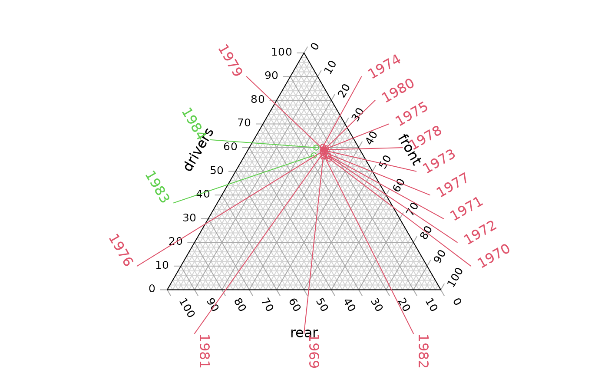

Annotate() identifies and label individual points on a ternary diagram
in the plot margins.
A list, matrix, data.frame or vector in which each element (or row) specifies the three coordinates of a point in ternary space.
Character vector specifying text with which to annotate
each entry in coordinates.
Optional vector specifying which side of the ternary
plot each point should be labelled on, using the notation "a", "b", "c" or
1, 2, 3.
Entries of "n" or 0 will not be annotated
(but still require an entry in labels).
Entries of NA will be allocated a side automatically,
based on the midpoint of coordinates.
Numeric specifying distance from plot margins to labels.
parameters to segments().
parameters to text().
Further parameters to text() and segments().
Annotation vignette gives further suggestions for manual annotation.
# Load some data
data("Seatbelts")
seats <- c("drivers", "front", "rear")
seat <- Seatbelts[month.abb %in% "Oct", seats]
law <- Seatbelts[month.abb %in% "Oct", "law"]
# Set up plot
oPar <- par(mar = c(2, 0, 0, 0))
TernaryPlot(alab = seats[1], blab = seats[2], clab = seats[3])
TernaryPoints(seat, cex = 0.8, col = 2 + law)
# Annotate points by year
Annotate(seat, labels = 1969:1984, col = 2 + law)

# Restore original graphical parameters
par(oPar)